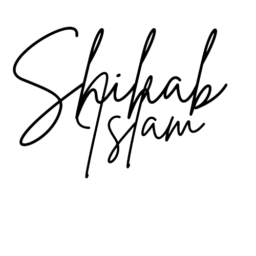
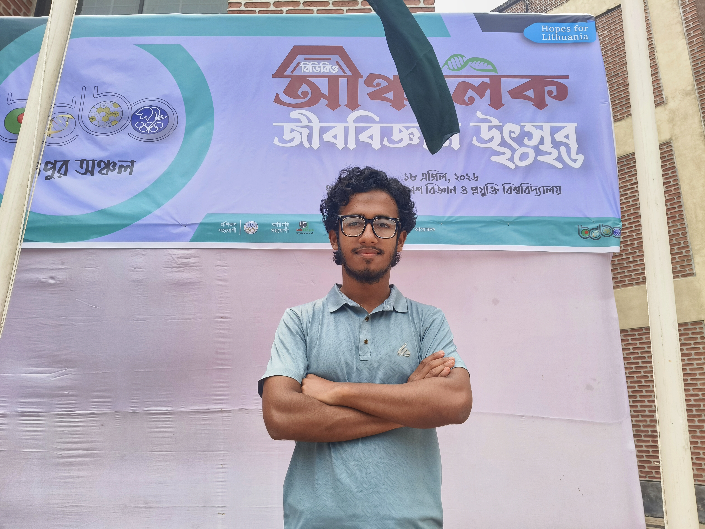

গল্পের ছোট্ট ভাণ্ডার — prose, fragments, fiction.
হিউম্যান সিভিলাইজেশন তার সবচেয়ে বড় ক্রাইসিস মোমেন্ট পার করতেসে। আজকের জামানায় একটা মানুস কোন কিছু করেই শান্তি পাচ্ছে না। সবাই একটা অদ্ভুত নেশায় বুঁদ হয়ে আছে।
ফ্রেন্ডস, ফ্যামিলি, ফেইথ সবকিছু মূল্যহীন বানায় ফেলসে। কোন কিছুর সাথে জুড়ে থাকতে পারেনা— কানেকশন হারায় ফ্যালে।
যাদের জন্য টাকা কামায় তাদের সাথে সময় কাটাইতে ভুলে যায়; যারা পড়াশুনা করে, তারাও হুদাই পড়তেসে— লাইফ বলতে কিচ্ছু নাই! এগুলা সমস্যা এজন্য কারণ আমরা এগুলারে সমস্যা বলি। সারাদিন কাজের কাজ কিছু করিনা; আবার না করাটাকে নিয়ে আফসোস করতে থাকি!
যেটা করতেছি এটা নিয়ে হ্যাপি থাকলে সমস্যা ছিল না; কিন্তু, আমরা যা করি সেটা নিয়ে আসলে কেউ হ্যাপি না — এই জন্যই সমস্যা!
কবিতার নদী — verses in Bengali and English.
মনের কথা — essays, opinions, reflections.
ফেসবুকে স্ক্রল করলে চোখের সামনে যে পোস্টগুলো বার বার ঘুরেফিরে চলে আসে, তার একটা হলো 'খিলাফাত' নিয়ে আলাপ। একদল ডানপন্থী মানুসদের এই দাবি আর যুক্তি শুনে আমি বেশিরভাগ সময়ই বিরক্ত হয়ে পড়ি। বিরক্ত হবার কারণগুলোকে ডিসেকশনের টেবিলে রাখার আগে ক'টা প্রশ্নের উত্তর দেয়া জরুরি (বাঙালি ভীষণভাবে মিসইন্টারপ্রেট করে)!
আমি কি খিলাফাতের ধারণার বিরুদ্ধে অবস্থান নিই? উত্তর হলো— 'না'। আমার অবস্থান কি স্যেকুলার? আবারও উত্তর হচ্ছে— 'না'। আমার পলিটিক্যাল স্ট্যান্ডকে রাইটিস্ট বা লেফটিস্ট ট্যাগে ঝোলানো বেশ বোকামি হবে। আমাকে 'শাহবাগী' বা 'শিবির' ট্যাগিং করা মানুসগুলা আমার ব্যাপারে ফ্যালাসি রাখা বৈ কিছু করে না!
এবার খিলাফাতের আলাপে আসি। কেন আমার কাছে খিলাফাত নিয়ে হৈ হৈ রৈ রৈ বিষয়টা বিরক্তিকর...
(১) একদল মানুস খিলাফাত প্রতিষ্ঠা করার কাজটাকে 'Top to Bottom' লেন্সে দেখে; তারা মনে করে আগে খিলাফাত আসবে, এরপর সমাজ ও ব্যক্তিজীবন রাতারাতি পাল্টে যাবে। আমার যৎসামান্য জ্ঞান ও যুক্তিবোধ বলে— এরকম ধারণা হলো নির্বুদ্ধিতা! আল্লাহর রাসুল সাল্লাল্লাহু আলাইহি ওয়াসাল্লাম তো এই পথে এগোননি! উনি প্রথমে ঈমানের দাওয়াত দিয়েছেন, এরপর সত্য ও ন্যায়ের আহ্বানে অক্লান্ত মেহনত করেছেন। উনি 'Bottom to Top' লেন্সে গিয়েছিলেন। আমাদের ঈমান নিয়েই তো প্রথম গলদ।
(২) খিলাফাত জয়যুক্ত হতে হলে উম্মাহর ঐক্য প্রতিষ্ঠিত হতে হবে। বড় জটিল কাজ হে সেলুকাস। আমরা ছোটো ছোটো ফিকহি ইস্যু নিয়েই আজও অনেক বেশি বিভক্ত। হাত কাঁধ পর্যন্ত নাকি কান পর্যন্ত উঠবে, তারাবির সালাত কত রাকআত— এসবের যেন ইয়ত্তা নাই। অথচ দুর্ভাগ্য! আমরা এই সামান্য ঐক্য নিয়ে সফলভাবে কাজ করতে পারি নাই, তবু খিলাফাতের বুলি সবার আগে আওড়াই!
(৩) আমার মতে, মুসলিম উম্মাহ ইন্টেলেকচুয়াল লড়াইয়ের জন্য এখনো প্রস্তুত হয়নি। আমরা জ্ঞানের ভান্ডার বানাতে পারি নাই। আলেম আর নন-আলেম স্কলারদের একসাথে বসে কমপ্লেক্স এই জগতের হিসাব কুরআন-সুন্নাহ দিয়ে মেলানোর চেষ্টা চোখে পড়ে না বললেই চলে।
(৪) খিলাফাত প্রতিষ্ঠা একটা দৃষ্টিকোণ থেকে সাংস্কৃতিক চ্যালেঞ্জও বটে। একসময় মুসলিম উম্মাহর সমৃদ্ধ সংস্কৃতি ও সাহিত্য ছিল, এখন এসব আলাপ শুধুই ধুলোপড়া অতীত। আমাদের চারপাশ ঢেকে রেখেছে পাশ্চাত্য সংস্কৃতি। কবিতা, উপন্যাস, গল্প, প্রবন্ধ, গান, উৎসব— সব জায়গায় তো পাশ্চাত্য আধিপত্যবাদ চলে।
(৫) এবারে কথা আসে নিরাপত্তা নিয়ে। হিসেবটা সহজ— রাসুল সাল্লাল্লাহু আলাইহি ওয়া সাল্লামকে হিজরত করতে হয়েছে, ওনার দর্শনে ঈমান আনার জন্য সাহাবিদের কত নির্যাতন মেনে নিতে হয়েছে; তাহলে আমরা কেন এতো সহজে খিলাফাত প্রতিষ্ঠা চাই? আল্লাহ চাইলে খিলাফাত আসবে; কিন্তু আমার আপনার দায়িত্ব এখন ধাপে ধাপে নিজেদের পরিবর্তন করা।
এই হলো আমার আলাপ। যৌক্তিক সমালোচনাকে সাদরে অভ্যর্থনা জানাচ্ছি...

SHIHAB ISLAM
Adventurer of Life
A generation was trained (i.e. forced) to chase conventional success and remain trapped in a money-driven matrix. While many compete relentlessly in a rat race, I chose a different struggle: to conquer myself. I fail often, but I persist. I have embarked on a path shaped by self-discovery, moral responsibility, and the pursuit of a life that ends with quiet satisfaction.
My name is Shihab Islam. I am a XII-grade student at Notre Dame College, Dhaka. I was born in Dinajpur, spent my childhood across Panchagarh and Lalmonirhat, and completed my SSC in 2024. My journey then led me to Dhaka for college.
I am deeply engaged in debating, literature, and travelling. Writing and teaching are not merely interests to me; they are ways of thinking and serving others. Through this website, I share my work to document the journey.
At present, I am shaping my life with one guiding aim: to leave a net positive impact on the planet. If Allah wills, I shall succeed ;)